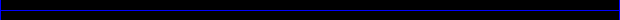

任天堂にはやや珍しいタイプの、ダーク系シリアス路線を貫いている『メトロイドシリーズ』。
今回はＦＰＡ（ファーストパーソンアドベンチャー）となった『メトロイドプライム』の続編が登場。主人公であるサムス・アランと自己を同一化し、新しいミッションをクリアするべし。
……これ、怖いです。本当に。
|
ＦＰＡという新ジャンルを開拓した『メトロイドプライム』の続編ということで、楽しみにしていた人もかなり多いのではないでしょうか。
日本ではまだ馴染みの浅い一人称視点のゲームですが、とにかく、怖い、スリル満点。
日頃クォータービューや縦横スクロールなどで慣れている我々は、操っているキャラクターとは別の視点からゲーム世界を覗いています。しかし、こちらは「画面＝自分の視界」。後ろを向けば後ろだけが、前を向けば前だけが見えるのです。
今回のサムスは惑星エーテルで消息を絶った銀河連邦ブラボー中隊の捜索が任務。スタートからリアルな映像でストーリーが展開します。映画を観ているような気分で、エーテルに到着。
この惑星は、隕石の衝突で２つの次元に分かれ、それが重なり合って存在しています。ルミナス族が住むライトエーテルと２つの次元に分かれたときに生み出されたイング族の住むダークエーテル。相似形を成す、この２つの世界でルミナスとイングはお互いの存亡をかけた戦いを長い時間繰り広げて来たというわけです。
|
まずは『スキャンバイザー』を使っての情報集め。使える武器や、色々な装置を調べたり、この惑星の生物についての知識を集めることからスタートします。ほかに手がかりはありませんから、スキャンバイザーだけが頼りという気分でとにかくスキャン。
敵がいない状況でさえも、いつ出てくるかいつ出てくるかという恐怖感に追われ、ついつい後ろや周りを気にして歩くサムス（中身は私）。…すごく、怖い。
自分を叱咤激励しつつ進むと、フィールドに散らばる兵士の遺骸を発見、ぶら下がる兵士の遺体に否応なく怖さがふくれあがります。この後「やっぱりー！」というようなことが起きました。プレイすると、たぶん皆さんも同じ感想を抱くと思います。
過去のメトロイド作品は知っていても「プライムシリーズ」は未体験という人は、かなり驚くのではないでしょうか。
まず、一般的なゲームとは臨場感が段違いで、まさに気を抜けないゲームです。決して視界が暗いというわけでもないのに、ついつい目を凝らしたくなるとか、周りが気になって冷や汗が出てくるといったリアル感がひしひしと感じられます。
一度プレイしてみて「上手くプレイするコツはなんだろう」と思いましたが、私の場合は『落ち着くこと』でした。臨場感がありすぎて恐怖心に勝てず、ちょっと慌てすぎました。
裏を返せば、それだけ入り込める魅力があるということ。プレイしていなくても、みんなで一緒に画面を見ているだけで盛り上がれるのでは？
当然、シリーズ初の対戦モードを活かした対戦モードもかなり熱いので、みんなで楽しめる要素満載の「新しいメトロイド」です。
|

|